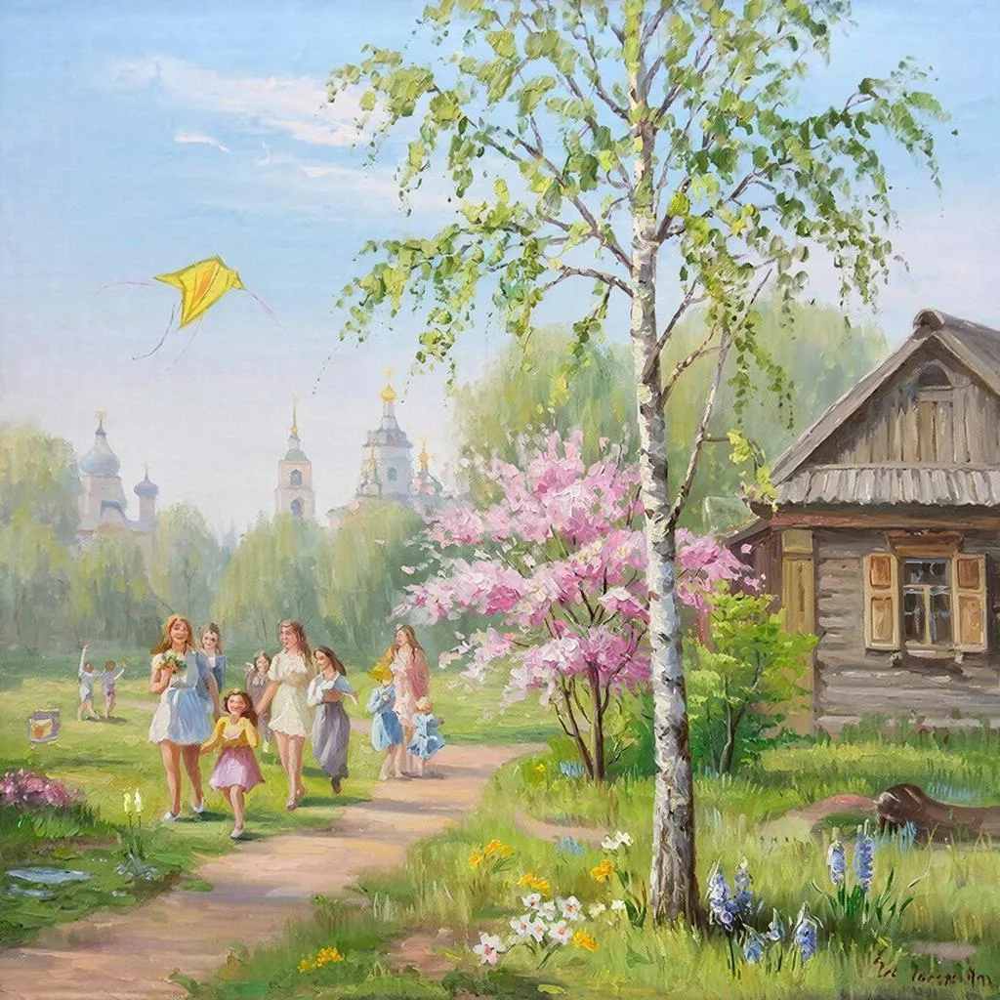

Весна в России — это время чудесных перемен, когда природа просыпается от долгого зимнего сна, радуя глаз яркими красками и ароматом первых цветов. Именно весной начинают оживать леса, реки освобождаются от ледяного плена, а воздух наполняется ожиданием чего-то светлого и прекрасного.
Первые лучи солнца, теплые ветры и капель — вот первые вестники наступающей весны. Деревья одеваются в нежно-зеленый наряд, а на земле появляются первые подснежники. Эти маленькие цветочки символизируют начало новой жизни и надежду на лучшее будущее.
Одним из самых красивых зрелищ весенней поры являются цветущие сады. Вишневые, яблоневые и абрикосовые деревья превращают обычные улицы и дворы в настоящие произведения искусства. Особенно красивы парки и скверы крупных городов, где можно встретить целые аллеи цветущих деревьев.
Весна — время народных гуляний и праздников. Многие города устраивают фестивали, посвящённые приходу весны. Например, праздник Масленицы знаменует собой конец зимы и наступление долгожданного тепла. Народные танцы, игры и традиционные блины — всё это создает атмосферу радости и единения.
Приближаясь к середине весны, природа окончательно раскрывает свою красоту. Поля зеленеют, птицы возвращаются домой, и повсюду слышится их веселое щебетание. Воздух наполняется запахами свежих листьев и травы, что вызывает приятные ощущения и желание выйти на прогулку.
Многие россияне используют весну для поездок на природу. Гулять по лесу, наслаждаться тишиной и гармонией окружающего мира — прекрасное занятие в это время года. Можно отправиться в поход, устроить пикник или просто прогуляться вдоль берега реки, наблюдая за оживающими растениями и животными.
Весна — отличное время для занятий спортом на открытом воздухе. Велосипеды, ролики, бег трусцой — всё это становится доступным благодаря улучшению погодных условий. Появляется возможность проводить больше времени на улице, занимаясь любимым видом спорта.
Итак, весна в России — это не просто смена сезонов, это настоящее возрождение природы и человеческих чувств. Присоединяйтесь к нам, чтобы насладиться всеми прелестями этого волшебного времени года!
Вернуться в зиму.